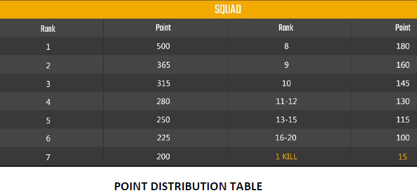
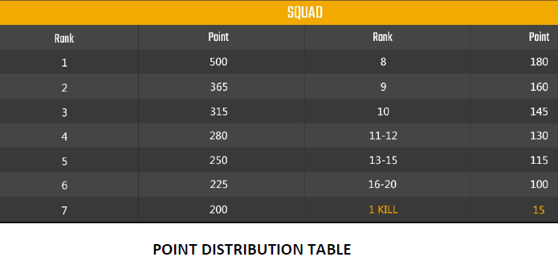

ProSang 1.0 | Events
ProSang 1.0 Events
Curiosity
Curiosity

PDF
INTRODUCTION:
Finally the extensive mind boggling studies of human for their working of wormholes have proven successful.
Kepler-452b, also known as Earth’s Cousin by NASA, is an exoplanet orbiting the Sun-like Star Kepler-452 about 1,402 light-years from Earth.
The crew travelled through the wormhole and is now on the orbiting the planet! Their camera results, coincides with that of Kepler Space Telescope, shows the planet to be habitable with rocky surface, big mountains with active volcanoes and also having a major portion covered with water.
Before risking the lives of the crew, the leader sends a rover that would check if the planet is worth surviving.
The rover, camera fitted and manually controlled, would travel through the rocky terrains, swim the oceans, speed through the volcanoes and load the boxes with samples from the planet.
Explore and survive the topology of the planet with mastering the controls of the rover through in the presence of all the mediums.
PROBLEM STATEMENT:
The teams have to design an ATV rover with arms over it, to perform the different task of gripping and sampling on the surface of exoplanet.
ROUND 1:
A test of flexibility, speed, strength, power and robustness of your bot.
TASKS:
A. Hemispherical Curvature: Starting from the beginning, your rover should be able to descend and then ascend a hemispherical bowl.
B. Stones: Next there will be a surface of varying sizes of stones, which must be crossed by the rover.
C. Control: In this obstruction would be a very smooth surface with oil spilled. The rover’s controls are tested at this stage.
D. Sand Turn: the rover has to make a turn on a surface full of sand. The reduced friction on tires because of oil will be brought to normal at this stage.
E. Water body: At this stage, rover should be capable of crossing the water body either by swimming in it or on it.
F. Uneven stairs: Inclination is somewhat in the form of stairs with max inclination of 40 degrees.
G. Bridge: A bridge on some height, consisting of 2 thin parallel strips for the tires of rovers with empty space in between and volcanoes beneath.
H. Arm test: When reaching plank, it is basically a vertical obstruction of about 4.3 inches, you have to grip the slider with your arm and then using it you have to lift off your front tyres balancing the bot on arm and rear tyres. This is to test for the strength and flexibility of your bot arms and gripper.
I. Suspension Test: In final stage, your bot will be hanged with the help of the slider for 50 seconds to test the grip strength and that of arms.
ROUND 2:
You have to collect sand from a pile kept over a platform and collect it in a box kept on your bot.Then you have to grip the sand box with your gripper and kept on some other platform at a distance from there. This you have to do with 4 cubical boxes of dimension 50 mm ✕ 50 mm ✕ 50 mm each. A) Collecting Sand to box B) Carrying it to the truck to unload C) Unloading sand boxes. D) Piling them up 2✕2. Finally we will weight up total weight of sand collected.
PROTOCOLS-
1) The team should have max of 6 members.
2) The bot can fit in a box of 500 mm ✕ 360 mm ✕ 500 mm before the start of the match, fully assembled.
3) The bot to perform for round 1 and 2 have to be same.
4) The teams should have two grippers, one for round 1 to grip something and other for round 2 to collect sand.
5) The potential difference between any two points of both the robots should not exceed 12V.
6) Use of pneumatics, hydraulics or any other mechanical mechanisms are allowed.
7) Any power source including Li-Po battery or AC source can be used but the safety has to be guaranteed by the teams. Only then they will be allowed.
8) The bot tyres will be max of 70 mm in diameter.
9) The water source is 70 mm deep.
10) The ground clearance of the bot should be minimum of 100 mm.
11) Wheel Track should be minimum of 200 mm and max of 330 mm.
12) Damage to the arena or any part of the arena will not be tolerated. Violation of any of the rules will lead to disqualification. Coordinator's decision is final and binding in case of any discrepancy.
Rules can be modified or changed without any prior notice, but it will be such that to accommodate the current bot design constraints.
MARKING SCHEMES:
1)Stable and Controlled rover would be preferred.
2)Unique mechanism for movement and arms would be preferred.
TOTAL MARKS:
Round 1: 1(10✕1A + 20✕1B + 50✕1C + 100✕1D + 20✕1E + 30✕1F + 20✕1G + 50✕1H + 80✕1I) - time (in seconds) - {total cost (in Rupees) / 10}
Round 2: 2(50✕Weight of Sand + 30✕number of piled sandboxes) - 2✕time (in seconds)
SUGGESTIONS:
1) Rocker Bogie mechanism is recommended for the bot to facilitate ATV.
2) You can go refer to Curiosity and other related rovers design.
3) Wireless control of the bot is suggested for greater robustness and control.
REFERENCE MATERIALS:
1) Rocker Bogie Mechanism
2) Curiosity driving mechanism
3) Curiosity tests
4) Rocker Bogie Mechanism Rover
5) RC Car Tires: Driving on water
Contacts:
1) Shikhar Srivastava( +91- 8639116896 ) Email id: shikharsrivastava1996@gmail.com
2) Saurabh Kumar ( +91-7004845008 )
PUBG Mobile
PUBG Mobile
PDF
Zero-in your enemies and win the thrilling last man standing game - PUBG. To win,
you’ll have to remain alert at all times and trust your instincts. During your explorations
in the game maps, experiment with different weapons. Scavenge a looted village to find
items and use them to your advantage. That’s not all. With airdrops, get a tactical
advantage over others with better arsenal and medical kits.
Showcase your gaming skills and unleash fury with your squad or as a lone wolf. Apart
from awesome action, win prizes to celebrate your victory too! Both emulator and mobile teams can participate in the event.
1) Each team must have 4 players and every member must be present throughout the
tournament.
2) All matches will be played on Erangel map.
3) The number of rounds each team plays will be decided after the registration are
over. (Tentative 5 rounds for each team)
4) Each team will be awarded points based upon their ranking and the number of
team kills for each round.
5) Team scoring the highest point after 5 rounds will be the winner.
6) If any player cheat or use any form of unfair means, will result in disqualification
of complete team.
7) If any bug happens during the matches, inform the coordinators immediately. No
complaints would be considered after the completion of match.
8) Participants can play from their Hostels.
9) All match details and results will be displayed on the Prosang Facebook page.


CodeWarZ
CodeWarZ
PDF
‘’May the code be with you’’
Can you express more in a programming language than speaking? Do you love the adrenaline
rush while coding in a contest? Are C++,Java and Python your most trusted allies? If your
answer is “Yes”, then it’s time to put your cape on and share a coke with your code hungry
team. Let your fingertip drip the hacker trapped inside the darkest neurons of the cerebrum.
Prosang 2019 presents you CodeWarZ, an ICPC format based coding contest. Be one with the
code and stand a chance to grab amazing prizes and goodies.
Team Size :
CodeWarZ is a 3-member team event.
Rounds :
CodeWarZ has 2 rounds:
1) Online Qualifier - It is to be held online on any coding platform (most probably on
HackerEarth). It is compulsory for every team from B.Tech 2nd and 3rd year and MCA 1st and 2nd
year to participate in this round and solve at least 1 question to be eligible for the 2nd round.
Top 40 teams will be selected for the onsite round.
2) Onsite Round - This will be the second and final round, based on the ICPC format. The onsite
round will be held at MNNIT Allahabad Campus. The contest can have several problems (6 to 8
in general), of varying difficulty levels and mostly being algorithmic in nature.
Rules and Regulations:
1) Teams from other universities will compete with 40 selected teams from MNNIT.
2) Each team can bring a reference material of max up to 25 pages.
3) Languages allowed are only C, C++, Java and Python.
4) Teams must be physically present in MNNIT campus for the final round.
5) Avoid using any online IDE’s or code sharing sites like pastebin and ideone to share your
code. In case you must, the responsibility of protecting your code lies solely with you.
6) You shall avoid sharing formulae, logic, or any other significant aspect of your code during a
contest.
7) You may try to solve a problem as a team, but make sure that there is only one submission
made for a discussed solution in a contest. Submitting the same solution (or even algorithm) by
different members of the team is not fair and will be considered as plagiarism.
8) Do not try any dishonest means to move up the rank tables.
Judging Criteria:
1) All the problems have same points allotted to them.
2) Users are ranked according to the most problems solved. Ties will be broken by the total time
for each user in ascending order of time
3) The total time is the sum of the time consumed for each problem solved. The time consumed
for a solved problem is the time elapsed from the beginning of the contest to the submission of
the first accepted run plus 20 penalty minutes for every previously rejected run for that
problem(Wrong answer, Time limit exceeded, Runtime Error). There is no time consumed for a
problem that is not solved.
4) The decision of the organizers in declaring the results will be final. No queries in this regard
will be entertained.
5) Any participant found to be indulging in any form of malpractice will be immediately disqualified.
Note:- For 1st years
Team Size : Up to 3 members
Rounds : Total 2 rounds
1. Offline Pen-Paper Coding Round - It is to be held offline. It is compulsory for every team
from B.Tech 1st year to participate in this round and solve at least 1 question to be eligible for
the 2nd round. Top teams will be selected for the onsite round.
2. Onsite Round - This will be the second and final round, based on the ICPC format. The onsite
round will be held at MNNIT Allahabad Campus. The contest can have several problems (6 to 8
in general), of varying difficulty levels and mostly being algorithmic in nature.
Extempore